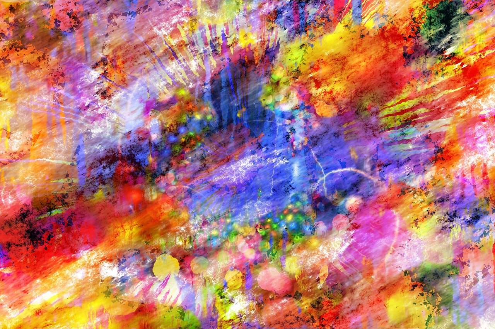
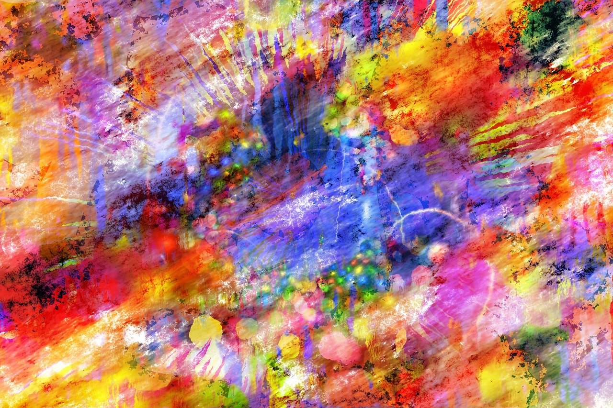

⇾ Lexica ⇽
AI, která je schopna vytvářet obrazy na základě popisu, představuje pokročilou aplikaci strojového učení a generativní umělé inteligence. Celý proces je náročný a složený, ale zároveň fascinující.
Prvním důležitým krokem je zpracování popisu. Tento popis může obsahovat různé informace, jako jsou objekty, scény, barvy, atmosféra a mnoho dalších aspektů obrazu. AI musí tuto slovní informaci převést na vizuální podobu.
Samotný generativní model, často založený na konceptu generativních adversárních sítí (GANs), hraje klíčovou roli v procesu. Model je trénován na rozsáhlém množství dat, kde jsou popisy spojovány s odpovídajícími obrazy. Během tréninku modelu se učí, jak vytvořit vizuální reprezentaci na základě slovního popisu. Toto zahrnuje interpretaci slov a vět, které tvoří popis, a následnou tvorbu odpovídajícího obrazu.
Po úspěšném tréninku může AI generovat obrazy na základě nových popisů. To může být využito v různých oblastech, včetně umělecké tvorby, filmového průmyslu a designu. Tato technologie otevírá nové možnosti pro tvorbu vizuálního obsahu na základě textových konceptů a představ. Je to také důležitý nástroj pro výzkum v oblasti strojového učení a umělé inteligence, který má potenciál změnit způsob, jakým vytváříme a komunikujeme pomocí obrazů.
 
